|
<< Click to Display Table of Contents >> Основные управляющие элементы |
  
|
|
<< Click to Display Table of Contents >> Основные управляющие элементы |
|
Экранные формы имеют общие стандартные элементы: заголовок, системные кнопки, бордюр. Внутренняя организация формы, её содержимое строго не регламентируется, но обычно состоит из стандартных элементов. В данной программе используются стандартные элементы, известные по опыту работы с другими программами: кнопки, поля для ввода, поля с выпадающим списком, меню, иерархический список, таблица и т.п. Неподготовленный пользователь может ознакомиться с правилами работы с ними в специальной литературе. Ниже будут рассмотрены управляющие элементы, реализация которых в программе имеет особенности по сравнению со стандартными либо понимание работы которых очень важно.
Системные и типовые кнопки экранных форм
Кнопки закрытия форм (для модальных форм), (для обычных форм — активные вкладки) и отмены аналогичны по своим действиям: они закрывают форму, не сохраняя изменения. К закрытию модальной формы приводит также и нажатие клавиши <Esc>. При этом, если изменения были внесены, то перед закрытием будет выведено предупреждающее сообщение с кнопками "Да" и "Нет".
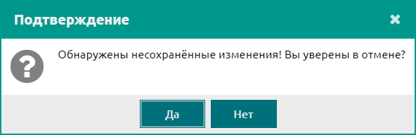
При нажатии на "Да" форма-редактор, из которой было вызвано данное сообщение будет закрыта, внесенные изменения не будут сохранены. При нажатии на "Нет" будет произведен возврат в форму-редактор.
и — соответственно разворачивает форму на всё окно браузера и сворачивает форму до её первоначального положения.
— сохраняет внесённые изменения, закрывает форму.
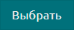
— служит для подтверждения сделанного выбора, характерна для форм, предоставляющих выбор из справочника.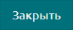
— закрывает форму, характерна для форм предоставляющих выбор из справочника.— служит для добавления записей. При клике открывается форма-редактор.
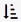
и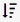
— элементы, указывающие каким образом отсортированы результаты: от меньшего к большему или от большего к меньшему соответственно.Область фильтра
Многие формы отображения данных имеют в верхней части набор полей, действующих как фильтр. Содержание основной части формы устанавливается в соответствие со значениями этих полей. Например, если в области фильтра предусмотрено поле Организация, то в основной части формы будут отображаться только данные, относящиеся к указанной в этом поле организации. Некоторые подобные формы открываются первоначально с пустым набором данных. Это связано с тем, что отображение нескольких тысяч записей сразу требует много времени. Поэтому пользователю нужно сначала установить значения в поля фильтра, после этого будут отображены данные, соответствующие заданному условию.
☝Полезной особенностью фильтра является то, что вновь добавляемые записи «наследуют» значения из фильтра, т. е. реквизиты формы, соответствующие полям фильтра, сразу заполняются.
Таблица
В данной программе для организации данных используется такой управляющий элемент как «таблица». Таблица может быть представлена как в «явном» виде (обычная таблица): состоит из ячеек, организованных по строкам и колонкам; так и в «не явном» («плашка») — информационная область без визуального деления на колонки и строки, которая содержит большой массив данных в упорядоченном виде. «Плашки» в основном используются там, где записи содержат большой объем информации, которая просто полностью не отобразилась бы в ячейках таблицы без горизонтального прокручивания, либо где применение простой таблицы с точки зрения использования интерфейса не уместно.
Для простых таблиц и «плашек» в данной программе есть общие правила использования:
•Добавление записи (строка с данными в обычной таблице и область с данными в «плашке») выполняется нажатием кнопки на форме. При этом открывается соответствующий редактор в режиме добавления.
•Удаление записи выполняется нажатием на кнопку удаления  (фокус на записи должен быть установлен). При попытке удаления записи выводится сообщение с просьбой подтвердить действие.
(фокус на записи должен быть установлен). При попытке удаления записи выводится сообщение с просьбой подтвердить действие.
•Редактирование записи осуществляется нажатием на кнопку редактирования , либо нажатием клавиши <пробел> на выделенной записи (фокус установлен). Откроется модальная форма редактора этой записи с доступными для редактирования реквизитами.
•Перемещение по таблице (строкам и ячейкам) либо «плашкам» производится стандартными клавишами управления курсором (в этом случае необходимо установить фокус на любой записи, «плашке»).
•В простых таблицах в некоторых формах есть элементы управления позицией записи, реализованные в виде стрелок  , расположенные в конце строки-записи.
, расположенные в конце строки-записи.
•На большинстве форм, содержащих простые таблицы и «плашки», предусмотрен управляющий элемент «Пагинатор». Позволяет переходить к нужной странице с записями. Для перехода к следующей/предыдущей страницам служат одинарные стрелки «вправо» и «влево» соответственно. Двойные стрелки «вправо» и «влево» позволяют перейти на последнюю/первую страницы с записями соответственно. Данный комплект управляющих кнопок располагается в левой части «Пагинатора». В правой части находится информация по количеству отображаемых записей на странице и всего загруженных.
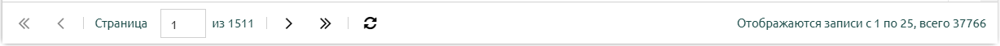
•Перемещение по таблице (строкам и ячейкам) либо «плашкам» производится стандартными клавишами управления курсором (в этом случае необходимо установить фокус на любой записи, «плашке»).
•Для большинства простых таблиц щелчок мышью по заголовку колонки приводит к сортировке таблицы по этому полю. В заголовке колонки появляется соответствующий значок . Повторный щелчок применяет обратную сортировку.
•Для поиска по всем записям в таблице и на «плашках» на странице удобно пользоваться встроенным в браузер поиском, вызываемом нажатием комбинацией клавиш <Ctrl+F>. При вводе последовательности знаков в это поле немедленно выполняется поиск по всем записям на форме (с подсветкой), которые начинаются с этих символов. Найти следующую, предыдущую подходящую запись можно с помощью клавиш со стрелками вверх и вниз.
Основные приёмы при работе с полями ввода
Поля ввода предназначены для ввода различной информации (текстовой, числовой, текстово-числовой) различными способами: прямым вводом, выбором из списка/справочника/календаря. Перед вводом в поле нужно обратить внимание на признаки, которые могут подсказать, как использовать данное поле. Признаки:
•Если в конце поля элемент , то поле позволяет выбрать из списка. Если при вводе выражения список раскрывается и подбираются значения согласно вводимому выражению - то это поле с выпадающим списком, поддерживающее поиск по значениям списка.
•Если в поле есть кнопка , то значение можно выбрать только из справочника.
•Если в поле есть кнопка , то это поле для прямого ввода даты или выбора её из выпадающего календаря.
•Если в поле есть одновременно элемент и , то поле сочетает в себе возможности поиска по значениям списка и выбора значения из справочника.
•Если в конце поля есть кнопка  , то поле поддерживает ввод с клавиатуры с последующим поиском по справочнику согласно введённому выражению.
, то поле поддерживает ввод с клавиатуры с последующим поиском по справочнику согласно введённому выражению.
Но есть специфические поля ввода, которые функционируют по определённым правилам, которые нужно изучить.
Для очистки любого поля от введённого/выбранного выражения нужно нажать на кнопку  , которая появляется при наведении курсором мыши на поле.
, которая появляется при наведении курсором мыши на поле.
Часто в полях ввода расположен плейсхолдер1, который "подсказывает", как и что нужно вводить в поле. Пример плейсхолдера - "Введите данные для поиска пациента и нажмите Enter".
Поле ввода с выбором из формы
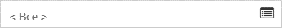
Такая конструкция используется, когда ввод данных в поле следует выполнять путём выбора из справочника или другой таблицы с помощью дополнительной формы. Форма для выбора значения открывается по клавише <Пробел> либо нажатием на кнопку .
Поле ввода с календарем
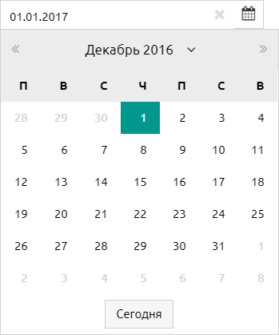
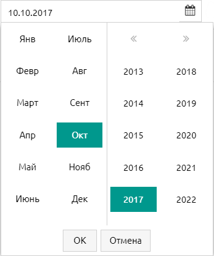
Такой элемент используется для ввода даты. Дату можно ввести в поле вручную, а можно нажать мышью на кнопку и выбрать нужную дату из календаря. Двойные стрелки «влево» и «вправо» позволяют перейти к предыдущему/следующему месяцу соответственно. Кнопка «Сегодня» выбирает текущую дату и подставляет в поле ввода. Одинарная стрелка «вниз» возле месяца «выдвигает» дополнительную панель для выбора любого месяца и года. Кнопка «Ок» подтверждает выбранные значения, «Отмена» «задвигает» дополнительную панель обратно.
Поле ввода с множественным выбором
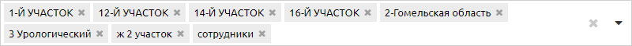
Используется там, где допускается выбор нескольких значений из списка. Для этого нужно нажать на стрелку «вниз», после чего из открывшегося списка выбрать кликом левой клавиши мыши нужные значения. Для удаления из поля одного значения нужно нажать на справа от значения. Для очистки всего поля (всех значений) нужно нажать на рядом со стрелкой "вниз". Чтобы выйти из списка или поля необходимо кликнуть вне его.
Поле ввода с выпадающим списком
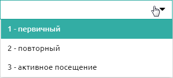
Этот элемент служит для выбора только одного значения из выпадающего списка. Выбор нужного значения осуществляется после нажатия левой кнопкой мыши на , после чего выпадающий список скрывается.
Поле ввода с подсказкой введённых ранее значений
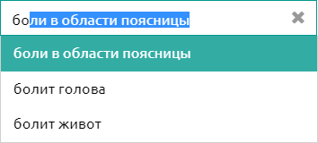
Этот элемент поддерживает ручной ввод в поле. При вводе текстового выражения элемент анализирует его и выдает все значения (в виде списка), в начале которых содержится это вводимое выражение. Выбор нужного значения из предложенных происходит нажатием левой кнопкой мыши на него, а также клавишей <Enter> — в этом случае выделение должно быть установлено на этом значении. Если в предложенном списке нет нужного значения, можно продолжить ввод, сохранить форму с этим значением — и оно будет доступно в списке при следующем вводе. То есть данный элемент позволяет как выбирать из списка предложенных значений, так и вводить иное значение, которого нет в списке.
Поле ввода с поиском по выпадающему списку
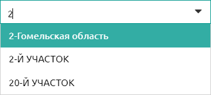
Этот элемент служит для выбора только одного значения из выпадающего списка. Для этого нужно нажать на стрелку «вниз» и выбрать из списка значение, либо начать вводить в поле текстовое выражение, по первым буквам которого список будет фильтроваться, выдавая наиболее подходящие вводимому выражению значения. Выбор значения осуществляется кликом мыши либо нажатием клавиши <Enter> - в этом случае в поле подставится то значение, на котором будет установлено выделение.
Поле ввода с кнопкой и поиском по выпадающему списку
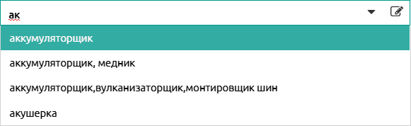
Совмещает функционал поля ввода с поиском по выпадающему списку и поля ввода с кнопкой. То есть позволяет вводить выражение с клавиатуры и выбирать нужное значение или сразу выбирать из справочника, вызываемого при клике по кнопке .
Поле ввода с поиском по выпадающему списку медицинского персонала
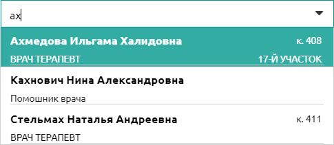
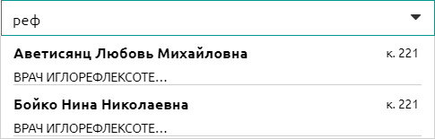
Функционал этого элемента специфический и используется для облегчения ввода нужного медицинского работника. Для этого, как и в обычном выпадающем списке, можно нажать на стрелку "вниз" и из списка выбрать нужное значение кликом мыши; нажатие на клавишу <Enter> подставит в поле то значение, на котором было установлено выделение. А можно начать вводить в поле текстовое выражение, согласно которому список будет фильтроваться, выдавая наиболее подходящие значения. В данное поле вводить можно как ФИО, так и название специальности или должности: подходящие вводимому выражению варианты будут отображены, включая варианты по ФИО и по специальностям (и должностям).
☝Следует отметить, что каждое значение в выпадающем списке содержит ФИО, специальность или должность, номер кабинета, название обслуживаемого участка. Если какой-либо реквизит не отображается - это значит, что он не указан в настройках.
Поле ввода с простым поиском
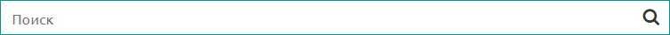
Часто используется как вспомогательный элемент в формах выбора (например, из справочников). Ищет в основном по одному определённому реквизиту (например, по наименованию). Для активизации поиска необходимо ввести в поле текстовое выражение, нажать на кнопку поиска  или клавишу <Enter> — и в подчиненной таблице отобразятся подходящие под это поисковое выражение результаты. Это непосредственный поиск по записям. Пример - Форма выбора учреждения (организации).
или клавишу <Enter> — и в подчиненной таблице отобразятся подходящие под это поисковое выражение результаты. Это непосредственный поиск по записям. Пример - Форма выбора учреждения (организации).
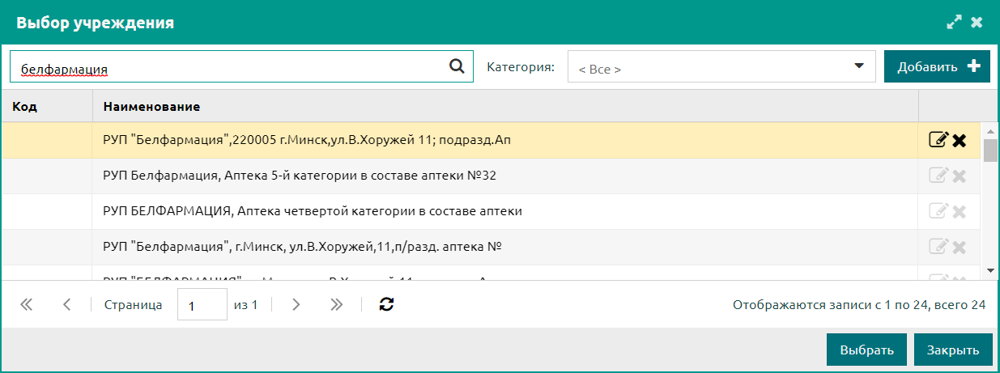
В некоторых формах выбора применяется поиск, который работает как фильтр: введенное в поле поиска выражение сразу же фильтрует список записей в подчиненной таблице без необходимости нажатия на <Enter>, кнопка поиска  здесь отсутствует.
здесь отсутствует.
Как пример - форма выбора отделения
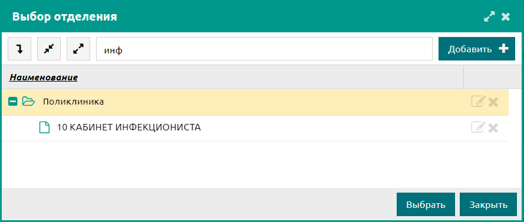
Поле ввода с поиском по диагнозам
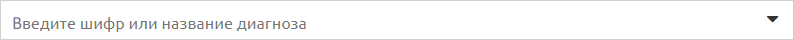
Распространенный элемент, применяется в большинстве форм. Представляет собой поле ввода, позволяет вводить вручную и искать по шифру или наименованию диагноза. Для активизации поиска по шифру необходимо ввести минимум три символа шифра и поле подгрузит список диагнозов с сортировкой "от родителя": первая верхняя запись будет родительский диагноз, ниже - ему подчиненные дочерние.
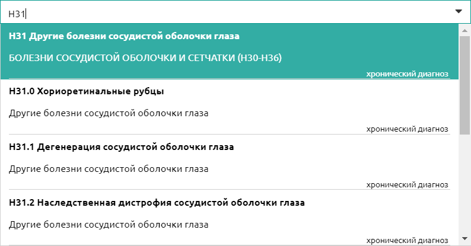
☝Особенностью данного элемента является то, что каждая запись в списке содержит верхней строкой дочерний диагноз, нижней строкой - название семейства диагнозов (диагноз-родитель). Справа внизу записи указан тип диагноза (хронический, острый, внешняя причина).
Для поиска по наименованию диагноза нужно ввести в поле минимум три буквы названия диагноза. В результате подгрузится список с подходящими под это выражение записями.
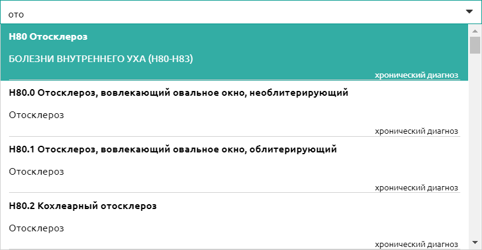
Для поиска по шифру диагноза нужно ввести шифр диагноза, минимум 3 символа (буквы+цифры). В результате подгрузятся диагнозы, соответствующие введённому шифру. Поле поддерживает также поиск и по шифру и по наименованию одновременно: при вводе шифра и через пробел текста элемент отобразит диагнозы, которые соответствуют такому выражению.
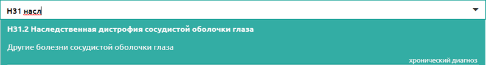
☝Полезной функцией элемента является автоматическое распознавание шифра диагноза при вводе русскими буквами - элемент сам "переключит" вводимое выражение шифра (при условии ввода "буквы+цифры") на латиницу и безошибочно подберет нужные записи.
Очистка поля от выбранного значения выполняется нажатием на "x".
Поле ввода с поиском по картотеке пациентов
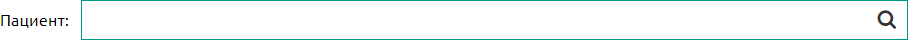
Специфический и многофункциональный элемент, используется практически во всех формах. Для активизации поиска необходимо ввести поисковое выражение, нажать на  или <Enter> на клавиатуре. В результате откроется модальное окно картотеки, где в строку поиска подставится введённое поисковое выражение и будет выполнен поиск по картотеке с выдачей результатов поиска в основной области модальной окна. В зависимости от введенного поискового выражения по определённому алгоритму определяется цель поиска и возвращается результат поиска. Двойной клик по нужному результату поиска (пациенту) подставляет его в данное поле. Подробнее про поиск по картотеке можно посмотреть в описании к форме Картотека пациентов.
или <Enter> на клавиатуре. В результате откроется модальное окно картотеки, где в строку поиска подставится введённое поисковое выражение и будет выполнен поиск по картотеке с выдачей результатов поиска в основной области модальной окна. В зависимости от введенного поискового выражения по определённому алгоритму определяется цель поиска и возвращается результат поиска. Двойной клик по нужному результату поиска (пациенту) подставляет его в данное поле. Подробнее про поиск по картотеке можно посмотреть в описании к форме Картотека пациентов.
1 Плейсхолдер – дословно "удерживающий место" (от англ. "place" - место и "holder" - удерживающий). Это элемент, который располагается на месте чего то важного и полезного. В данном случае этим элементом является поясняющий поле ввода текст, который может подсказывать, что можно (нужно) делать с этим полем.